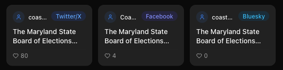

100+
newsrooms, fact-checkers, civil society groups and public agencies signed up
See the accounts shaping your feed before they shape your views.
An AI copilot for public discourse · by SimPPL, a U.S. 501(c)(3) nonprofit
Driven by repeated baseless claims: once people meet enough of them, they start doubting accurate reporting too.
Fewer than three in ten Americans now trust mass media to report the news fully, accurately and fairly. The people who most need reliable information trust it least.
False stories reach 1,500 people six times faster than true ones (MIT, 2018).


Campaigns run everywhere at once. Moderation stops at each platform's edge.
A campaign running on four platforms leaves each one holding roughly a quarter of the evidence. No moderation team sees the rest.
The tool researchers used to look across platforms, CrowdTangle, shut down in 2024. Paid replacements cost thousands a month.
OnPassive recruited investors on every platform at once, so no single platform saw the whole scheme. The SEC charged it with raising $108 million from 800,000 investors.
We found AI-generated channels running an all-positive PR wave for Burkina Faso’s interim leader. YouTube terminated them later, on its own. We filed no report.
The network reached 3.4 million followers in Bangladesh. Meta took it down following our reporting on policy-violating hate and harassment there.
Working with Migrasia, we surfaced 14 networks running job scams on migrant workers in under a day. The Global Anti-Scam Alliance nominated us across its 120+ members in 90 countries.
We run this year’s workshop at the Trust and Safety Research Conference. Meta, TikTok and YouTube held that slot in past years, presenting their own research APIs.
Coded, multilingual wording shifts weekly; keyword lists miss it.
Millions of posts become a navigable map of narratives and actors.
An agent writes and runs the analysis, returning cited answers.
Other tools search what they already collected. Arbiter decides what to collect.
A keyword list only returns posts that used your words, so the conversation you most need to see is exactly the one it misses.
Arbiter works out the actors, places and domains your question implies, then goes looking for those.
Keyword search and meaning search fuse, then rerank down to the posts that answer the question.
Nobody labels their own post skeptical. Arbiter returns the pushback that shares none of your words.
Ten platforms plus 20,000+ news sites. A month of cross-platform conversation compiles in 20 to 40 minutes.
One narrative holds the X accounts and the Bluesky accounts together, so a claim that jumps platforms stays one thread.
Themes show which accounts drive which narrative, in which language, on which platform.
Each claim links back to the post it came from and to every account that posted the same words. In one US narrative last week we traced 7 claims, and 66 pairs of accounts posted the same text.
The agent writes and runs the analysis, and answers come back in under a minute. Every row opens into its posts, and we hand-graded 540 agent runs against a reference analysis.

Three investigations, each one a public study anyone can open.
Fake ads promise work abroad and deliver people into forced-labour compounds. We collected 2,251 ads across platforms and grouped them into 14 recruiting networks by the phone numbers, scripts and WhatsApp handles they shared. The whole investigation compiled in under two hours.
Pages promoted Ibrahim Traoré at 100% positive and 100% joy, a uniformity organic discourse almost never shows. The factories and railways in the videos were AI-generated and drew millions of views. A year later the network rebuilt, and we caught it again.
A printing error became a claim of 500,000 fake ballots. Across a 1,485-post study we found the same sentence posted by 50+ accounts within hours, and the top post, at 1.32M interactions, demanded a new federal voting law.
Swapneel Mehta · Founder & Executive Director
AI safety at MIT and BU; Integrity Institute board member.
Dhara Mungra · Co-Founder, leads engineering
Ex-Bombora data scientist; NYU M.S. in Data Science.


Six full-time engineers build and run the platform.
Mukund Sudarshan · Anthropic
Christian Schroeder de Witt · University of Oxford
Chirag Raman · TU Delft
Sandra Khalil · All Tech Is Human
Rebecca Harvey · UK FCDO
Karan Dhabalia · entrepreneur (exited to Stripe)
Mansi Panchamia · World Bank
Stacey Peters · ex-VTDigger
Full board and team: simppl.org/team
The most useful thing you can do is make one introduction.
Introduce us to legal or risk counsel at a platform. We run the cross-platform risk assessment one platform cannot run on its own.
Introduce us to an editor. We support newsgathering, digital audience work, and investigative reporting inside the newsroom.
Grants pay for free access for journalists and fact-checkers in the countries our partners work in.
Write to team@simppl.org; we follow up within the week.
A pilot is one case study scoped to your issue. The evidence and sources are yours. The platform is live at arbiter.simppl.org.
The deception signals we score, what institutions did about our reporting, and the three case studies in full.
These signals add up to tactics, tested from Hindi to Cyrillic.
NEST caught a secret defamation bill from under 60 accounts.
Meta removed a network; YouTube terminated flagged channels; X opened an internal investigation into pro-Russian bots.
Maryland, California, New York, Odisha, and the Philippines opened conversations.
Fake job ads promise work abroad and deliver workers into scam compounds.
With Migrasia, we traced 2,251 ads into 14 recruiting networks.
The Global Anti-Scam Alliance invited us to present in Bangkok. The investigation compiled in under two hours.
Recruitment tactics by post count, Indonesian study.
Pages promoted Ibrahim Traoré at 100% positive, 100% joy.
Fake factories and railways drew millions of views.
We filed no report. A year later the network rebuilt; we caught it again.
Uniformly green panels are the anomaly that starts the investigation.
A printing error sent some voters the wrong primary ballot. Replacements and unique envelopes rule out duplicate voting.

The top post, 1.32M interactions, demanded a new federal voting law. Maryland’s election administrator signed a letter of commitment to deploy statewide.